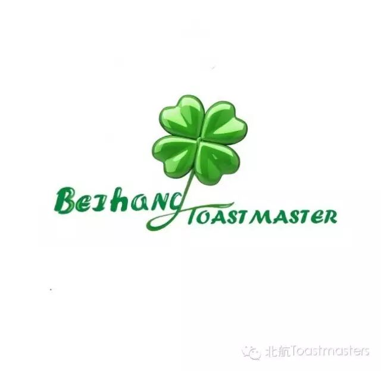
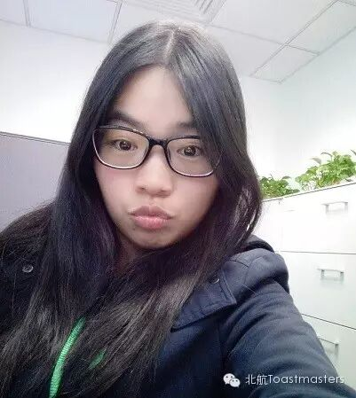

My name is Rita, and I am a postgraduate student from the Department of Foreign Language. I joined Beihang Toastmasters in May, 2015. My story with Toastmasters started in 2013 when I went to Athena Toastmaster with my classmate Doris who is a senior member of Toastmasters International. I was impressed by the environment of Athena Toastmaster club and really wanted to join them. But I was too busy with my internship and study to assume a third role of Toastmaster club member. My internship ended in this May and with a stroke of fortune I found that there is a toastmaster club in Beihang and it really thrilled me. I joined my fellow members without a second thought. And they have proven to be very supportive, professional and helpful. What I gained here is not just improvement of English but also communication skills and friendship. I wish I could have joined Beihang Toastmasters years before since I know that how much I have missed.
